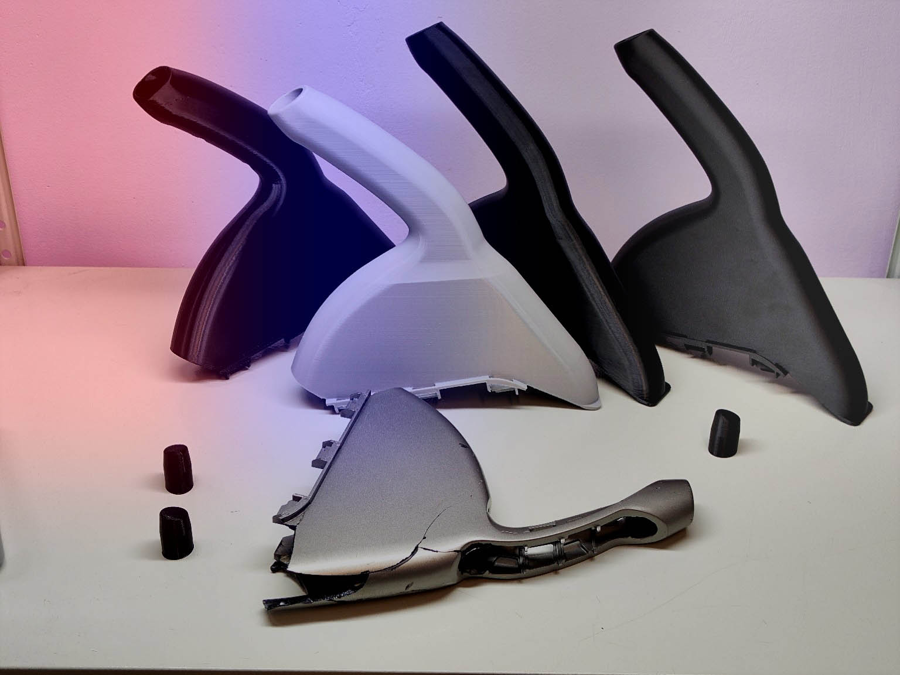

Honda Civic 5D · VIII / VIII рестайлинг
Ручка ручного тормоза Honda Civic 5D VIII поколения
Качественная 3D-печать. Простая установка. Полная совместимость со штатным креплением.
- Новая деталь
- Контроль геометрии
- Отправка по России
Преимущества
Сделано для восстановления аккуратного вида салона
Галерея
Фото изделия и посадочных мест
Видео
Видео установки
Совместимость
Для каких авто может подойти
Информация справочная — перед покупкой проконсультируйтесь с продавцом. Ручка подходит только для кузова 5D, на Civic 4D не подходит.
| Модель | Годы | Кузов | Статус |
|---|
Установка
Как установить
Снять старую ручку
Аккуратно демонтируйте изношенную или поврежденную ручку.
Подготовить посадочное место
Очистите крепление и проверьте, что ничего не мешает установке.
Установить новую ручку
Совместите деталь со штатным креплением и посадите ее на место.
Проверить фиксацию
Убедитесь, что ручка держится плотно и работает без люфта.
Сравнение
Почему не купить б/у ручку?
Б/у ручка
- Неизвестный износ
- Потертости
- Возможные повреждения
Новая 3D-печатная
- Новое изделие
- Аккуратный внешний вид
- Контроль качества
FAQ
Ответы на частые вопросы
Отзывы
Что говорят покупатели
Производство
Мелкосерийная 3D-печать с контролем качества
Изделие производится методом 3D-печати с вниманием к геометрии, посадочным размерам и внешнему виду. Каждая ручка проходит визуальный контроль и проверку перед отправкой.
Мелкосерийное производство позволяет быстро вносить улучшения, контролировать стабильность партии и проверять совместимость на автомобиле.
Ручка ручника Honda Civic 5D — усиленная замена оригинальной детали
Полная информация о совместимости, особенностях конструкции и преимуществах усиленной ручки стояночного тормоза Honda Civic 5D VIII поколения.
Почему ломается оригинальная ручка ручника Honda Civic 5D
Владельцы Honda Civic 5D VIII поколения хорошо знают одну из самых распространённых проблем салона этого автомобиля — разрушение ручки стояночного тормоза. Со временем оригинальная ручка ручника Honda Civic начинает терять внешний вид, покрываться трещинами и становиться неприятной на ощупь.
Основная причина заключается в конструкции оригинальной детали. Наиболее нагруженные участки имеют сравнительно небольшую толщину, из-за чего со временем появляются трещины и поломки. Особенно часто повреждения возникают в местах крепления и постоянного контакта с рукой водителя.
Ещё одна известная проблема — прорезиненные вставки. С возрастом они начинают разрушаться, становятся липкими и неприятными на ощупь. Многие владельцы Honda Civic сталкиваются с тем, что ручка начинает буквально пачкать руки и портить впечатление от салона автомобиля.
Дополнительно со временем стирается заводское покрытие. Краска облезает, появляются потёртости и царапины, из-за чего даже ухоженный автомобиль начинает выглядеть значительно старше своего возраста.
Почему не всегда стоит покупать б/у ручку ручника Civic 5D
Многие владельцы сначала пытаются найти оригинальную ручку ручного тормоза Honda Civic 5D на авторазборках или в частных объявлениях. Однако большинство деталей, представленных на вторичном рынке, имеют те же недостатки, что и установленная на автомобиле ручка.
- Трещины корпуса.
- Потёртости и следы эксплуатации.
- Разрушенные прорезиненные вставки.
- Следы ремонта.
- Скрытые повреждения креплений.
Даже если бывшая в употреблении ручка выглядит хорошо на фотографии, невозможно предсказать её реальный ресурс после установки. Поэтому покупка б/у детали часто становится временным решением проблемы.
Для чего была создана эта ручка стояночного тормоза Civic 5D
Данная ручка ручника Civic 5D была разработана как полноценная замена оригинальной детали. Основная задача состояла не в копировании заводской конструкции, а в устранении её наиболее распространённых недостатков.
В процессе проектирования была создана собственная 3D-модель, в которой были усилены наиболее слабые места оригинальной конструкции. При этом сохранены все размеры, посадочные поверхности и штатные точки крепления.
Преимущества нашей ручки ручника Honda Civic 5D
Усиленная конструкция
Наиболее нагруженные участки получили дополнительное усиление. Благодаря этому ручка значительно превосходит оригинальную деталь по прочности и устойчивости к нагрузкам.
Нет липких резиновых вставок
Конструкция полностью лишена прорезиненных элементов, которые со временем начинают разрушаться. Поверхность остаётся приятной на ощупь даже спустя годы эксплуатации.
Не облезает и не стирается
Ручка изготавливается из окрашенного в массе пластика. Основной цвет исполнения — чёрный. Поскольку поверхность не окрашивается отдельно, ей не грозит облезание краски, характерное для многих оригинальных деталей.
Полное соответствие размерам оригинала
Все размеры соответствуют оригинальной ручке стояночного тормоза Honda Civic. Деталь устанавливается на штатное место без доработок и полностью совместима со штатными креплениями и уплотнителями.
Удобный хват
Особое внимание было уделено эргономике. Ручка удобно лежит в руке и обеспечивает комфортное использование каждый день.
Как производится ручка ручного тормоза Honda Civic 5D
Изготовление осуществляется методом 3D-печати на современном оборудовании. Используется качественный пластик, подходящий для эксплуатации в салоне автомобиля.
Материал обладает достаточной термостойкостью для использования в летний период и не боится обычных температур, возникающих внутри автомобиля.
Производство осуществляется в Москве. Каждая деталь проходит контроль размеров перед отправкой покупателю.
Варианты исполнения
Основной цвет исполнения — чёрный. Такой вариант наиболее гармонично смотрится в большинстве салонов Honda Civic 5D.
По индивидуальному запросу возможно изготовление в других цветах, а также печать пластиком с карбоновым наполнением, имеющим характерную текстуру и матовую поверхность.
Установка
Установка занимает примерно 10–15 минут и не требует специальных навыков. Ручка устанавливается вместо штатной детали с использованием заводских креплений.
При необходимости предоставляются рекомендации по установке.
Совместимость
- Honda Civic 5D VIII поколения (2005–2011).
- Honda Civic VIII рестайлинг.
- Honda Civic Type R VIII.
- Honda Civic Type R VIII рестайлинг.
Перед оформлением заказа рекомендуется уточнить совместимость с вашим автомобилем.
OEM номера
Данная ручка является заменой оригинальных деталей с номерами:
- 47105SMGZS10
- 47105SMGE03ZA
Если вы ищете ручку ручника Honda Civic 5D, ручку стояночного тормоза Civic 5D, ручку ручного тормоза Honda Civic VIII, замену OEM 47105SMGZS10 или 47105SMGE03ZA, данная модель полностью совместима со штатной конструкцией и разработана специально для автомобилей Honda Civic 5D восьмого поколения.
Закажите ручку ручного тормоза для Honda Civic
Оформите заказ через Авито с удобной доставкой.
Купить на Авито